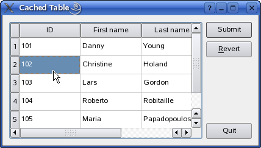

Cached Table Example

The example consists of a single class, TableEditor, which is a custom dialog widget that allows the user to modify data stored in a database. We will first review the class definiton and how to use the class, then we will take a look at the implementation.
TableEditor Class Definition
The TableEditor class inherits QDialog making the table editor widget a top-level dialog window.
class TableEditor : public QWidget { Q_OBJECT public: explicit TableEditor(const QString &tableName, QWidget *parent = 0); private slots: void submit(); private: QPushButton *submitButton; QPushButton *revertButton; QPushButton *quitButton; QDialogButtonBox *buttonBox; QSqlTableModel *model; };
The TableEditor constructor takes two arguments: The first is a pointer to the parent widget and is passed on to the base class constructor. The other is a reference to the database table the TableEditor object will operate on.
Note the QSqlTableModel variable declaration: As we will see in this example, the QSqlTableModel class can be used to provide data to view classes such as QTableView. The QSqlTableModel class provides an editable data model making it possible to read and write database records from a single table. It is build on top of the lower-level QSqlQuery class which provides means of executing and manipulating SQL statements.
We are also going to show how a table view can be used to cache any changes to the data until the user explicitly requests to submit them. For that reason we need to declare a submit() slot in additon to the model and the editor's buttons.
| Connecting to a Database |
|---|
Before we can use the TableEditor class, we must create a connection to the database containing the table we want to edit:int main(int argc, char *argv[]) { QApplication app(argc, argv); if (!createConnection()) return 1; TableEditor editor("person"); editor.show(); return app.exec(); } The static bool createConnection() { QSqlDatabase db = QSqlDatabase::addDatabase("QSQLITE"); db.setDatabaseName(":memory:"); if (!db.open()) { QMessageBox::critical(0, qApp->tr("Cannot open database"), qApp->tr("Unable to establish a database connection.\n" "This example needs SQLite support. Please read " "the Qt SQL driver documentation for information how " "to build it.\n\n" "Click Cancel to exit."), QMessageBox::Cancel); return false; } QSqlQuery query; query.exec("create table person (id int primary key, " "firstname varchar(20), lastname varchar(20))"); query.exec("insert into person values(101, 'Danny', 'Young')"); query.exec("insert into person values(102, 'Christine', 'Holand')"); query.exec("insert into person values(103, 'Lars', 'Gordon')"); query.exec("insert into person values(104, 'Roberto', 'Robitaille')"); query.exec("insert into person values(105, 'Maria', 'Papadopoulos')"); query.exec("create table items (id int primary key," "imagefile int," "itemtype varchar(20)," "description varchar(100))"); query.exec("insert into items " "values(0, 0, 'Qt'," "'Qt is a full development framework with tools designed to " "streamline the creation of stunning applications and " "amazing user interfaces for desktop, embedded and mobile " "platforms.')"); query.exec("insert into items " "values(1, 1, 'Qt Quick'," "'Qt Quick is a collection of techniques designed to help " "developers create intuitive, modern-looking, and fluid " "user interfaces using a CSS & JavaScript like language.')"); query.exec("insert into items " "values(2, 2, 'Qt Creator'," "'Qt Creator is a powerful cross-platform integrated " "development environment (IDE), including UI design tools " "and on-device debugging.')"); query.exec("insert into items " "values(3, 3, 'Qt Project'," "'The Qt Project governs the open source development of Qt, " "allowing anyone wanting to contribute to join the effort " "through a meritocratic structure of approvers and " "maintainers.')"); query.exec("create table images (itemid int, file varchar(20))"); query.exec("insert into images values(0, 'images/qt-logo.png')"); query.exec("insert into images values(1, 'images/qt-quick.png')"); query.exec("insert into images values(2, 'images/qt-creator.png')"); query.exec("insert into images values(3, 'images/qt-project.png')"); return true; } The |
TableEditor Class Implementation
The class implementation consists of only two functions, the constructor and the submit() slot. In the constructor we create and customize the data model and the various window elements:
TableEditor::TableEditor(const QString &tableName, QWidget *parent) : QWidget(parent) { model = new QSqlTableModel(this); model->setTable(tableName); model->setEditStrategy(QSqlTableModel::OnManualSubmit); model->select(); model->setHeaderData(0, Qt::Horizontal, tr("ID")); model->setHeaderData(1, Qt::Horizontal, tr("First name")); model->setHeaderData(2, Qt::Horizontal, tr("Last name"));
First we create the data model and set the SQL database table we want the model to operate on. Note that the QSqlTableModel::setTable() function does not select data from the table; it only fetches its field information. For that reason we call the QSqlTableModel::select() function later on, populating the model with data from the table. The selection can be customized by specifying filters and sort conditions (see the QSqlTableModel class documentation for more details).
We also set the model's edit strategy. The edit strategy dictates when the changes done by the user in the view, are actually applied to the database. Since we want to cache the changes in the table view (i.e. in the model) until the user explicitly submits them, we choose the QSqlTableModel::OnManualSubmit strategy. The alternatives are QSqlTableModel::OnFieldChange and QSqlTableModel::OnRowChange.
Finally, we set up the labels displayed in the view header using the setHeaderData() function that the model inherits from the QSqlQueryModel class.
QTableView *view = new QTableView;
view->setModel(model);
view->resizeColumnsToContents();
Then we create a table view. The QTableView class provides a default model/view implementation of a table view, i.e. it implements a table view that displays items from a model. It also allows the user to edit the items, storing the changes in the model. To create a read only view, set the proper flag using the editTriggers property the view inherits from the QAbstractItemView class.
To make the view present our data, we pass our model to the view using the setModel() function.
submitButton = new QPushButton(tr("Submit"));
submitButton->setDefault(true);
revertButton = new QPushButton(tr("&Revert"));
quitButton = new QPushButton(tr("Quit"));
buttonBox = new QDialogButtonBox(Qt::Vertical);
buttonBox->addButton(submitButton, QDialogButtonBox::ActionRole);
buttonBox->addButton(revertButton, QDialogButtonBox::ActionRole);
buttonBox->addButton(quitButton, QDialogButtonBox::RejectRole);
The TableEditor's buttons are regular QPushButton objects. We add them to a button box to ensure that the buttons are presented in a layout that is appropriate to the current widget style. The rationale for this is that dialogs and message boxes typically present buttons in a layout that conforms to the interface guidelines for that platform. Invariably, different platforms have different layouts for their dialogs. QDialogButtonBox allows a developer to add buttons to it and will automatically use the appropriate layout for the user's desktop environment.
Most buttons for a dialog follow certain roles. When adding a button to a button box using the addButton() function, the button's role must be specified using the QDialogButtonBox::ButtonRole enum. Alternatively, QDialogButtonBox provides several standard buttons (e.g. OK, Cancel, Save) that you can use. They exist as flags so you can OR them together in the constructor.
connect(submitButton, SIGNAL(clicked()), this, SLOT(submit()));
connect(revertButton, SIGNAL(clicked()), model, SLOT(revertAll()));
connect(quitButton, SIGNAL(clicked()), this, SLOT(close()));
We connect the Quit button to the table editor's close() slot, and the Submit button to our private submit() slot. The latter slot will take care of the data transactions. Finally, we connect the Revert button to our model's revertAll() slot, reverting all pending changes (i.e., restoring the original data).
QHBoxLayout *mainLayout = new QHBoxLayout;
mainLayout->addWidget(view);
mainLayout->addWidget(buttonBox);
setLayout(mainLayout);
setWindowTitle(tr("Cached Table"));
}
In the end we add the button box and the table view to a layout, install the layout on the table editor widget, and set the editor's window title.
void TableEditor::submit() { model->database().transaction(); if (model->submitAll()) { model->database().commit(); } else { model->database().rollback(); QMessageBox::warning(this, tr("Cached Table"), tr("The database reported an error: %1") .arg(model->lastError().text())); } }
The submit() slot is called whenever the users hit the Submit button to save their changes.
First, we begin a transaction on the database using the QSqlDatabase::transaction() function. A database transaction is a unit of interaction with a database management system or similar system that is treated in a coherent and reliable way independent of other transactions. A pointer to the used database can be obtained using the QSqlTableModel::database() function.
Then, we try to submit all the pending changes, i.e. the model's modified items. If no error occurs, we commit the transaction to the database using the QSqlDatabase::commit() function (note that on some databases, this function will not work if there is an active QSqlQuery on the database). Otherwise we perform a rollback of the transaction using the QSqlDatabase::rollback() function and post a warning to the user.
| See also: A complete list of Qt's SQL Database Classes, and the Model/View Programming documentation. |
Files: